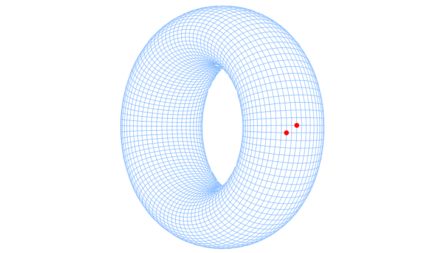
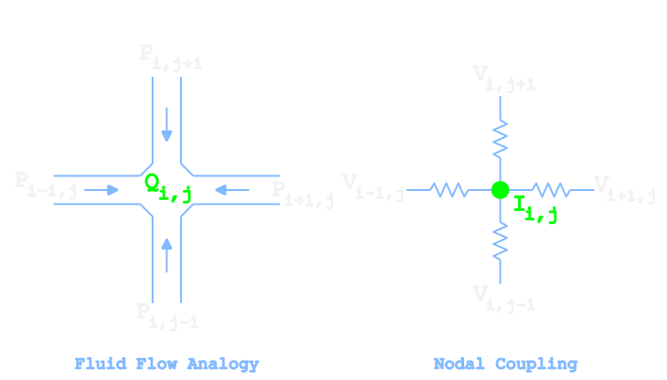
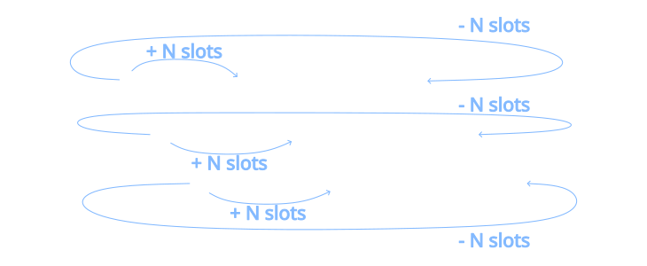
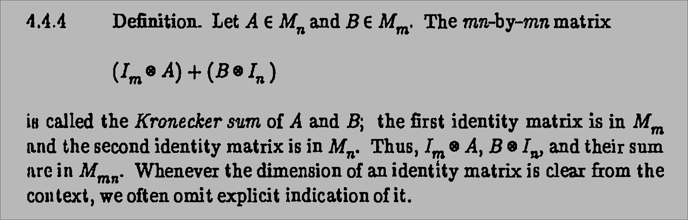

Infinite Resistors Grid

On this infinite grid of ideal one-ohm resistors, what’s the equivalent resistance between the two marked nodes?
This puzzle statement was made popular by the famous xkcd webcomic, in an entry titledNerd Sniping. It was, however, inspired by theGoogle Labs Aptitude Test.
{kind=link}
On the title text,Randall Munroe, creator of xkcd, wrote:
I first saw this problem on the Google Labs Aptitude Test. A professor and I filled a blackboard without getting anywhere. Have fun.
Table of Contents
An Engineers Solution
My solution, as an engineer, sidesteps the advanced math needed to solve this puzzle by taking the numerical route.
#!/usr/bin/env python3
from numpy import eye, roll, zeros
from scipy.sparse import kronsum, coo_matrix
from scipy.sparse.linalg import spsolve
N = 250 # linear nodes count | N*N = grid size
i, j = 2, 1 # probing distance -- knight's move in this case
# resistor network matrix setup (toroidal grid)
id_mat = eye(N)
pc1D = coo_matrix(2*id_mat - roll(id_mat,1,axis=0) - roll(id_mat,-1,axis=0))
G_matrix = kronsum(pc1D, pc1D) # conductance matrix
# currents vector setup
currents = zeros(N*N)
currents[0] = 1 # current source
currents[N*i+j] = -1 # current sink
# solving the system for voltages
voltages = spsolve(G_matrix, currents)
# retrieving equivalent resistance for the path
R_equivalent = voltages[0] - voltages[N*i+j]
print(R_equivalent)
On my desktop computer this python code takes about 1 second to return
0.7731995455056025
This value is less than 0.01% off from 4/π−1/2, the symbolic solution.
Longer Explanation
The key to solving this puzzle is replacing the infinite plane with a grid that wraps around itself. In two dimensions, a periodic grid istopologically equivalent to a torus (a donut shape). So, instead of thinking about an infinite planar grid, we shift our problem to something kind of like this:

With periodic boundaries:
- Every node is topologically identical,
- Every node has the same amount of neighbors,
- The lattice is translationally invariant.
So sourcing current at (0,0) and sinking at (i,j) is equivalent anywhere. As long as the mesh is big enough so the current does not wrap around the lattice, we are safe.
To encode this grid and solve this problem in just a few lines of code, we still need a few more ingredients besides Ohm’s law: the discrete Poisson equation, Laplacian matrices and Kronecker sums. I’ll build the intuition for each of these step by step.
1) Discrete Poisson Equation
We start by looking at a single node and noticing that it connects to four neighboring nodes, one in each Cartesian direction. Making an analogy with fluid flow, we can think of the node voltages as pressures. If the surrounding node pressures are not the same, current will flow through the central node. Conversely, if all neighboring nodes have the same pressure, there will be no flow.

In our case, we are talking about electricity, so we are dealing with voltages instead of pressure. We can express this current flow through a node as:
4Vi,j−Vi+1,j−Vi−1,j−Vi,j+1−Vi,j−1=Ii,jwhich is thediscrete Poisson equation.
Before trying to encode this 2D equation as it is, we go back one step and think about the 1D case where the nodal coupling equation becomes:
2Vi,j−Vi+1,j−Vi−1,j=Ii,jNow consider a system with 4 nodes (N=4). Wishful thinking, it would be nice to have a matrix like:
2−10−1−12−100−12−1−10−12because it completely encodes the periodic 1D nodal coupling (a ring).
Now have a look at this part of the code:
2*id_mat - roll(id_mat,1,axis=0) - roll(id_mat,-1,axis=0)
This is exactly what it accomplishes. It does so, by rolling the identity matrix twice, (once up, once down). By rolling up I mean taking the last row and placing it at the top. Rolling down means taking the top row and placing it at the bottom.
So rolling up:
1000010000100001⇓←0 1 0 0 0←0 1 0 0 0 ←0 1 1 0 0←0encodes the left neighbors. The gray boxes simply highlight the matrix diagonal, and the arrows indicate that the left neighbor has been encoded. Notice that the first row wraps around and finds its neighbor in the last column of the matrix.
Rolling down, as you have guessed, encodes the right neighbors:
1000010000100001⇓0→0 0 1 1 0→0 0 0 1 0→0 0 0 1 0→Notice that the diagonal entries remain zero. This means that multiplying the identity matrix by 2 and subtracting the two rolled matrices produces exactly the 1D coupling matrix we were hoping for.
PC1D=2−10⋮0−1−12−1⋮000−12⋱00⋯⋯⋱⋱−1⋯000−12−1−100⋮−12Creating the matrix this way completely avoids the need for boomer loops and requires only a single parameter (N) to specify its size.
The PC1D matrix is, by the way, asymmetric circulant matrix.
2)Laplacian Matrix
So far we have nodes connected in one direction, but we also need the orthogonal connections to create our 2D grid. There is neat way of accomplishing this usingkronecker products.
===================
Before continuing, a quick note about naming things. Remember the famous quote:
There are only two hard things in Computer Science: cache invalidation and naming things.
– Phil Karlton
This makes me think that, regarding the naming part, things are actually way worse in math. At least computer scientists acknowledge the problem and develop strategies to manage namespaces. Mathematicians and physicists, on the other hand, often don’t seem bothered by it. They typically name objects using a single letter—preferably Greek, to signal elegance.
Anyway, I digress.
The naming collision we have here is that a matrix encoding nodal connectivy in graph theory is calledlaplacian (L), not to be confused with thelaplace operator (∇), which is also often called laplacian as well. There is also the Laplace transform operator (L).
===================
Back to the topic: it is possible to build a multidimensional discrete Laplacian using Kronecker products of 1D discrete Laplacians. This is often written in textbooks as
L=I⊗T+T⊗ISince the term laplacian (L) is overloaded in its meaning across the different fields of math, I will call it here PC, standing for “periodic coupling”. Also the Identity matrix will be labeled as Id to avoid confusion with I which commonly denotes current in Ohm’s law. In this notation, we can rewrite the equation above as
PC2D=Id⊗PC1D(x)+PC1D(y)⊗IdSince our system is identical in both directions, we can simplify this to
PC2D=Id⊗PC1D+PC1D⊗IdLet’s take N=3 as an example and evaluate this step by step. The first term expands the 1D matrix into blocks along the diagonal, producing an N2 matrix from the original N matrix. That is exactly what the Kronecker product does.
Id⊗PC1D=PC1D000PC1D000PC1DIn our context, this represents horizontal (left/right) resistor connections. At this point an impatient person might jump ahead and say, that this is not acomplishing much, as we could have done the same by just passing N2 instead of N as value from the beginning.
But the cool part comes next. The matrix PC1D⊗Id encodes the vertical (up/down) resistor connections.
PC1D⊗Id=2Id−Id−Id−Id2Id−Id−Id−Id2IdThis is not immediately obvious, but what it is doing is applying PC1D to the row index while leaving the column structure intact. To make this clearer, let’s look at the first block row:
[2Id−Id−Id]This expands to
200020002−1000−1000−1−1000−1000−1Remember that we are using N=3 as example. Effectively what we are doing is shifting the -1 by ±N positions in the flattened matrix. This encodes the top and bottom node connections without the need of explicit indexing or stencils loops.

3) Kronecker Sum
But wait, there is more. Looking at page 268 of
Horn, R. A. and Johnson, C. R. Topics in Matrix Analysis. Cambridge, England: Cambridge University Press, 1994.
We find the following

What this means in our context, using my notation, is that
Id⊗PC1D+PC1D⊗Id=PC1D⊕PC1D( note that the symbols ⊗ and ⊕ are not the same: ⊗ denotes the Kronecker product while ⊕ denotes the Kronecker sum )
Consequently, we conclude that
PC2D=PC1D⊕PC1DConveniently, SciPy’s sparse module already includes aKronecker sum implementation. So the seemingly simple code line
G_matrix = kronsum(pc1D, pc1D) # conductance matrix
does more than it looks like at first glance. It encodes the entire left-hand side of the discrete Poisson equation while also constructing it as a sparse matrix. This is crucial, because it allows the use of sparse linear solvers, making the computation both fast and memory-efficient.
4) Ohm’s Law
Finally, we arrive at the easy part: solving for the voltages using Ohm’s law.
What we have built so far is the conductance matrix. Since all resistors are 1 Ω, the conductance matrix and the resistance matrix are numerically identical in this case. Therefore,
V=G−1IIf we inject a unit current (1 A) at a given node, we can compute the equivalent resistance as
Req=V(0,0)−V(i,j)Going Beyond
Cyclic Patterns Meet Fourier
To be honest, I already like the previous solution, it is simple and down-to-earth. An error of 0.01% is on the same order of magnitude as the tolerance of the best resistors you can buy. Even if we had perfect resistors and a perfect measurement setup, an infinite resistor mesh would still require an infinite amount of time for the injected current to propagate through the entire network before the exact voltage could be measured. Nobody wants to wait that long.
That said, from a computational point of view, there is still some performance left on the table.
Earlier, we saw that the PC1D matrix is a symmetric circulant matrix. Every row is just the previous row shifted cyclically, and the entire matrix is completely determined by its first row. That observation is pure gold, because circulant matrices are diagonalized by the discrete Fourier transform. In other words, we can compute their eigenvalues and eigenvectors using Fourier analysis.
The sparse solver from the previous section has time complexity of O(N2). By exploiting the circulant structure and using the Fast Fourier Transform (FFT), we can reduce this to approximately O(NlogN).
Let’s go back to the equation defining our system: conductance times voltage equals current.
GV=INow apply the Fourier transform to both sides:
F(GV)=F(I)Let’s define the Fourier transform of the current vector as
F(I)=I^so the equation becomes
F(GV)=I^Now comes the key trick.
My linear algebra professor, Reginaldo de Oliveira, used to say that the most underrated equation among all those “most beautiful equations in mathematics” lists was the eigenvalue equation:
Av=λvHis point was that the humble scalar λ somehow accomplishes the same job as the entire matrix A. Once you move into the right basis, the basis formed by the eigenvectors, the complicated matrix multiplication turns into a simple scalar multiplication.
That is exactly the direction we are heading here. The Fourier basis is the eigenbasis of any circulant matrix, so applying the Fourier transform diagonalizes the conductance matrix:
F(GV)=λV^Combining this with our earlier definition of I^, we obtain
I^=λV^which is trivial to solve:
V^=λI^So instead of solving a large system of linear equations, we only need to compute the eigenvalues, perform an element-wise division in the Fourier domain, and then apply the inverse Fourier transform to recover the voltages.
Eigenvalues of the Periodic Discrete Laplacian
So now we only have one missing ingredient: the eigenvalues. Fortunately, they are remarkably easy to derive: Consider the one-dimensional discrete Laplacian with periodic boundary conditions,
(Lv)n=2vn−vn+1−vn−1You can read (Lv)n as the value at node (n) after applying the Laplacian operator to the vector v. Since the operator is translation invariant, it is natural to look for eigenvectors in the form of discrete Fourier modes:
vn=e2πikn/N,k=0,1,…,N−1Substituting this expression into the previous equation gives
(Lv)n=2e2πikn/N−e2πik(n+1)/N−e2πik(n−1)/N=(2−e2πik/N−e−2πik/N)e2πikn/NUsing Euler’s identity,
eiθ+e−iθ=2cosθwe obtain
(Lv)n=[2−2cos(N2πk)]vnComparing this to the eigenvector-eigenvalue equation, we can conclude that the eigenvalues of the one-dimensional periodic discrete Laplacian are
λk=2−2cos(N2πk)As discussed in the previous section, the two-dimensional periodic Laplacian is the Kronecker sum of one-dimensional Laplacians:
L2D=L1D(x)⊕L1D(y)A useful property of the Kronecker sum is that its eigenvalues are simply the sums of the eigenvalues of its operands. Therefore, the two-dimensional periodic discrete Laplacian eigenvalues are:
λk,ℓ=4−2cos(N2πk)−2cos(N2πℓ)Writting this all down as code:
#!/usr/bin/env python3
from numpy import zeros, pi, cos
from numpy.fft import fftfreq, rfftfreq, rfft2, irfft2
N = 25000 # linear nodes count | N*N = grid size
i, j = 2, 1 # probing distance -- knight's move in this case
## setting up the RHS of the system
# currents matrix setup
currents = zeros((N,N))
currents[0, 0] = 1 # current source
currents[i, j] = -1 # current sink
# bringing currents matrix to fourier domain
I_hat = rfft2(currents)
# wave numbers arrays for the eigenvalues
kx, ly = fftfreq(N).reshape(-1,1), rfftfreq(N).reshape(1,-1)
eigenvalues = 4 - 2*cos(2*pi*kx) - 2*cos(2*pi*ly)
eigenvalues[0,0] = 1 # just to avoid division by 0
# Solving for voltages in fourier domain
V_hat = I_hat / eigenvalues
# Inverting the FFT to get the Voltages in space domain
voltages = irfft2(V_hat, s=(N, N))
# retrieving equivalent resistance for the path
R_equivalent = voltages[0, 0] - voltages[i, j]
print(R_equivalent)
Just for fun: solving an enormous mesh of 625 million nodes in less than 9 seconds
> time python infinite-resistors-fourier.py
0.7732395407351629
________________________________________________________
Executed in 8.66 secs external
usr time 7.50 secs 314.00 micros 7.50 secs
sys time 1.13 secs 286.00 micros 1.13 secs
More From This On The Internet
An longer discussion about the comic can be found on the webpageExplain xkcd.
A circuit simulation oriented approach can be seen inMatthew’s Beckler blog.
Plot Twist: It Was NOT About Math
One thing I found particularly interesting is that this puzzle, for google, was more about emotional intelligence than engineering or mathematics. The problem itself can be stated in a single line of text, but developing a solution takes a lot of skill and a lot of time to work out the math. AsExplain xkcd puts it:
Putting such a problem in an aptitude test can be a way of testing if someone might realize when they cannot solve a problem and remember to move along to the other problems. If they fail to do this, they will never reach the easier problems that come later, and will fail due to their inability to realize when they will come up short.
I don’t know about you, but to me this makes a lot of sense!